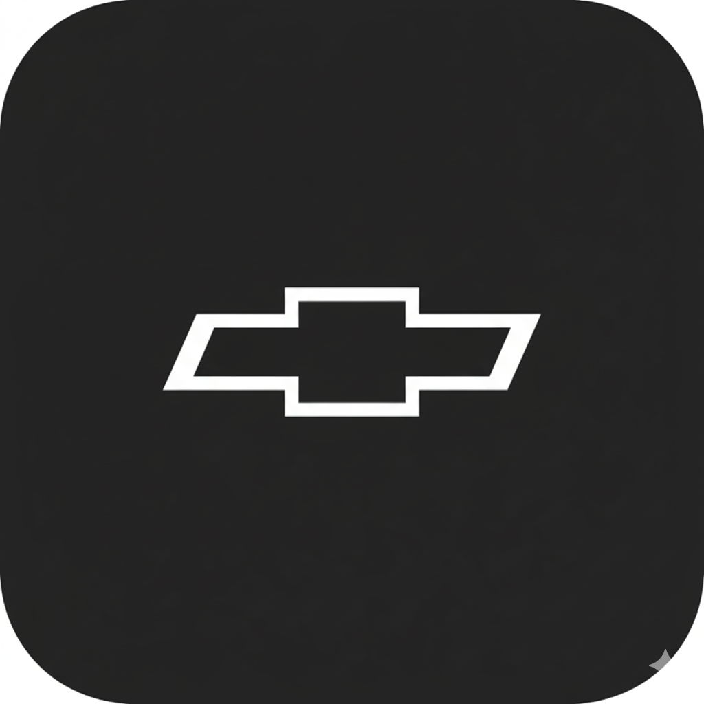

연결 대기--
CURRENT LOCATION차량 위치를
차량 위치를
확인하세요
Wayon Cloud 연결이 필요합니다.
Updated from vehicleWaiting for update
현재 속도-- km/h방향 --
차량 전압-- V전류 --
입력 전력-- W기기 --

Wayon Cloud 연결이 필요합니다.

최근 수신 시각 없음
주행기록과 실제 Wayon 카메라·충격 감지·원격 터미널 기능입니다.
두 카메라를 하나의 360° 화면으로 연결합니다.